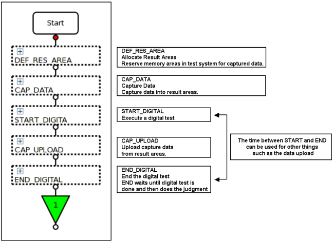
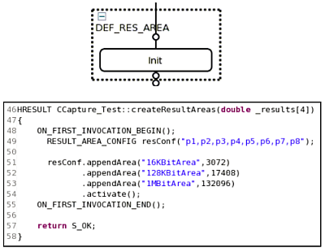
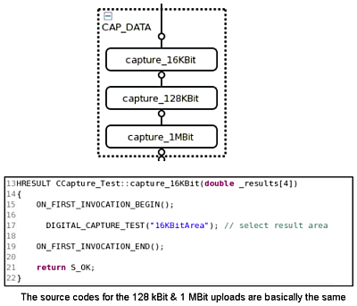
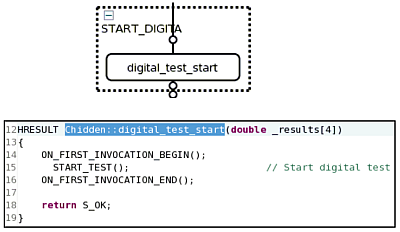
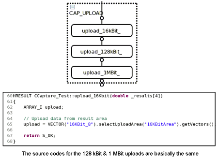
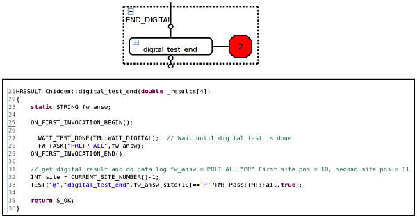

Using Hidden Upload for Digital Capture
The Hidden Upload feature allows you to use test methods to set up a test flow to perform a digital capture test and then upload all the results at the end, which can save a lot of time, depending on your test.
This feature is particularly useful when using SmartCalc as it is integrated into SmartCalc. Note, however, that SmartCalc requires UTM (Universal Test Method).
Example
The following gives you an overview how to set up a testflow to utilize the Hidden Upload for a digital capture test.
Structure your test flow as follows:
- Allocate result areas
- Capture Data
- Start a non blocking digital test
- Hidden upload of capture data
- Wait until non-blocking digital test is finished, then do the judgment of data.
This is illustrated in the sample test flow below.

The test suites are explained in more detail below.
1. Allocate Result Area

The test method example shown above allocates three result areas:
- 16 kBit
- 128 kBit
- 1 MBit
The steps are as follows:
- Create the result area with
RESULT_AREA_CONFIG(resConf) for all pins doing the digital capture. - Use appendArea to allocate memory for a capture test. The result size is given in bytes.
- To determine the correct result size in bytes, proceed as follows:
- For selective capture:
x8/x4 Total recording size = 1024 + (initial discard + frame size * number of frames + interframe discard * (number of frames - 1)) / 8
x1/x2/x3/x5/x6/x7 Total recording size = 1024 + (initial discard + frame size * number of frames + interframe discard * (number of frames - 1)) / 4
- For capture:
STD size = sample size/4 + 1024
DBL size = sample size/8 + 1024
If the sample size is too small, you will get an error message during the digital capture.
Try to minimize the result areas.
The tester memory is limited by memory license.
If more memory is needed, upgrading a license only for the capture pins is sufficient.
The internal buffer size is 1024 bytes.
- For selective capture:
- Finally execute an
activateto enable the result areas.
Additional Aspects:
- It is possible to define result areas more than once within a test-flow.
- To delete all defined result areas execute an "
activate". - To release result areas, you have two methods:
resConf.release()RESULT_AREA_CONFIG::removeAllAreas()
- If you use
RESULT_AREA_CONFIGthis is performed internally with no HW access, thus the overhead is negligible.
2. Capture Data

The above test method captures data into the result area named "16KBitArea" (the first result area).
To enable this, the following test method APIs have been enhanced:
- DIGITAL_CAPTURE_TEST();
- NB_DIGITAL_CAPTURE_START();
This capture initializes the respective predefined result area and captures the data into this area.
An error message will be produced if:
- The result area has not been defined.
- The result area is defined for some pins but not for all the pins doing the capture.
If the result area is too small, an error will appear when the data is uploaded.
3. Start a Digital Capture Test

The above test method starts a non-blocking digital test.
The V93000 tester hardware now executes a digital test while the optical upload link is free of any system controller/HW communication.
Since the tester's digital hardware has a dual port memory, data can be uploaded from digital channels without interrupting the functional test.
There are, however, also the following alternative ways, to hide uploads:
- Use a non blocking digital capture test [
NB_DIGITAL_CAPTURE_START]. - Use waiting times of your device (see Using the "wait" Settling Time Within a DPS_TASK).
- Use analog test [functional test could trigger an analog test] (see A dynamic analog test example).
- Use dynamic DPS tests.
4. Upload of the Captured Data

The above test method uploads the captured data from a result area named
"16KBitArea".
To ensure that the digital test which has been started
does not get stopped, you need to use a run_test (do not use a run and branch
test) and leave the timing/level/analog/vector fields in test-suite dialog blank.
If the captured data is incomplete (area size too small), or nothing is captured an error message will appear.
Note: If you are using this in the framework of SmartCalc, the calculations on uploaded capture data can be done at this point (hidden calculation).
5. End the digital capture test

The above test method waits until the digital test you have previously started has finished, then it does an evaluation of the results.
To ensure that the digital test which has been started does not get stopped, you need to leave the timing/level/analog/vector fields in the test-suite dialog blank.
The GET_FUNCTIONAL_TEST() TM-API does not
work for a multi-site setup, thus the PRLT? firmware command (see PRLT? - (request Parallel ResuLTs)) is used to retrieve the pass or fail result.
Functional changes
- Introduced in SmarTest 6.5.3